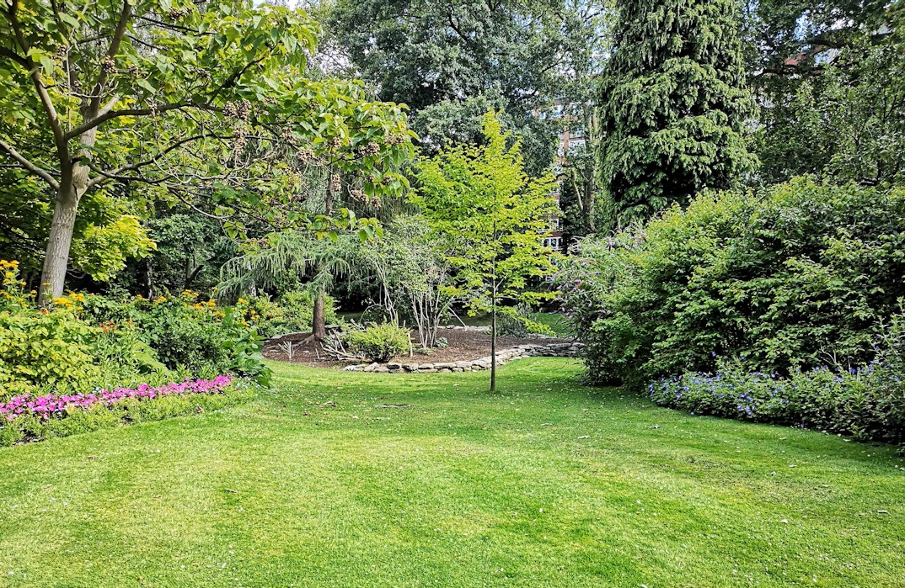
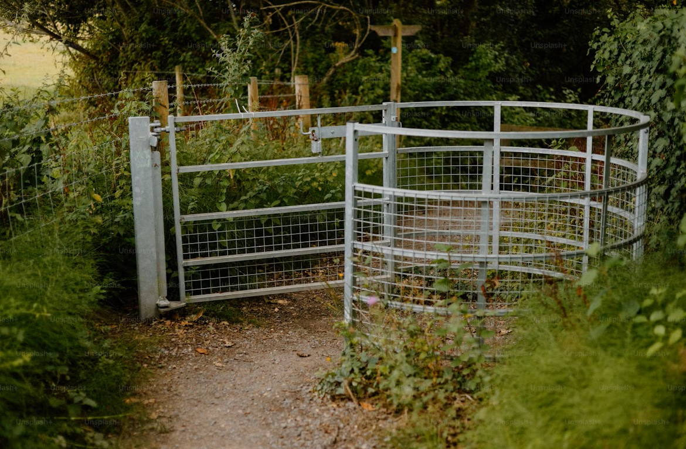

Bright Sprout Blog

Gardening for Seniors: Why It’s Great and How to Get Started
Read on to discover why gardening for seniors is so beneficial and how to embark on your own gardening journey.
Gardening Tips for Beginners
Thinking about starting a garden but not sure where to start – or worse, feel like you’re cursed with a “black thumb”?

Lawn Care Tips for Beginners
Caring for your first lawn is a great feeling. Here's how to start and where to go from there.

Everything You Need To Know About Outdoor Flower Care
Whether you’re a houseplant lover looking to expand your horizons or you have a lackluster space you’d like to spruce up, planting outdoor flowers is an easy and rewarding project.

6 Tips to Water Your Lawn Responsibly
A lush green lawn is the envy of the neighborhood. In this article, we will explore the benefits of lawn irrigation and offer some tips for responsible irrigation.

Keeping Animals out of Your Garden
A gardener’s biggest frustration can be animal damage and your time and money getting eaten up overnight. Here are some tips and tricks for keeping your garden from turning into a buffet for our hungry neighbors.